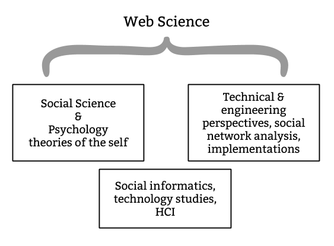

The Presentation of Self
on a Decentralised Web

The Web's value depends upon its use by and in society and its ability to serve communication needs without destroying other valuable types of interaction.- The Web Science Framework.
Goals
- Make it easier to understand the scope and complexity of issues with presentation of self in digital spaces.
- Formulate it in a way that is useful to software developers building the next generation of social systems.
Research Questions
and Contributions
| Question | Contribution |
|---|---|
| How can we access the bigger picture when it comes to understanding the impact of networked publics on presentation of self? | Conceptual framework: The 5 Cs of Digital Personhood |
| How does self-presentation change depending on the power dynamics of Social Web services? | Several studies of social behaviours in different scenarios on the Web. |
| What can developers do to adapt or accommodate self-presentation needs of individuals? | Primer for cutting edge open standards for the Social Web; critical analysis of standards development; and prototype implementation. |
The 5 Cs
of Digital Personhood

Empirical studies
Several perspectives are covered to some extent in my empirical studies.
- Active users of a system
- Passive users
- Developers of a system
- Third party developers
- Other third parties
The studies explore different power dynamics on social media:
- Content creators, with fans; conscious performers with an audience.
- SNS users who deceive each other and the system itself: when, how and why.
- When users design and develop their own systems.
- The technical affordances of mainstream social systems.
| Study | Type | Participants | Perspectives | Resulting terminology/themes |
|---|---|---|---|---|
| What is a profile? | Descriptive, observational | 18 | A S T | flexible, access controlled, prominence, representative, portable |
| Constructing online identity | Empirical, observational | 10 | A | roles, attribution, accountability, traceability |
| The many dimensions of lying online | Survey | 500 | A P S | system, authenticity, audience, safety, play, convenience |
| Computationally mediated pro-social deception | Interviews, design fictions | 15 | A P O | effort & complexity, strategies/channels, privacy & control, authenticity & personas, access & audience, social signalling & empowerment, ethics & morality |
| Social Media Makers | Interviews | 15 | A S T O | self-expression, persistence/ephemerality, networks & audience, authority, consent |
What is a profile?
Why? Technical constraints and affordances can have a big impact on what people are able to express through a system. I charted and compared these to get a feel for the common variations.
Key findings:
- Diverse types of data make up a profile.
- APIs tend to subset UIs, so alternative UIs are limited.
- A system's model of audience and the role and importance of connections affect both access control and distribution of data.
- Little expectation of profile use beyond the system in which it is created.
- Profiles may be a means to an end, or an end in themselves.
Constructing Online Identity
Why? Systems may appear to have an overall goal or direction, but individual motivations and methods for participation can vary greatly.
Key findings:
- Personas are not constrained to YouTube; they may be linked transparently and consistency to other systems.
- Different views on a person, or personas, are conveyed through second channels.
- Connections between personas may appear differently depending on how they are discovered.
- Participants may change roles within the system.
The Many Dimensions of Lying Online
Why? Using McCornack's definition of 'deception', we know people deceive online for many reasons. This study tries to describe and explain them.
Key findings:
- Reasons are mostly benign, and often conducive to improved social interactions.
- Sometimes for safety or necessity.
- Sometimes for improved understanding of oneself or others.
- Often the system pushes back.
- Deception is a tool to cope with complexity, and online spaces offer new levels of complexity for social interactions.
Social Media Makers
Why? A niche community with ideals of data ownership, and rejection of the mainstream roles of centralised social media; it's unclear if this is a concrete trend, but worth investigating attitudes in the face of prospective wider decentralisation.
Key findings:
- Control over visuals is important for self-expression.
- Crossing multiple audiences affects sharing behaviour.
- My website = my rules. No need to directly meet expectations of a platform or community but they are affected anyway by third-party platforms due to cross-posting.
- Importance of how long content sticks around for (longevity vs ephemerality).
- Finding balance between individual and collaborative identity construction.
Web Standards
Standards are also crucial, and the World Wide Web Consortium’s (W3C) work of creating and recommending standards while maintaining stakeholder consensus shows that engineering needs to go hand in hand with a social process of negotiation.- the Web Science Framework
Social Web Protocols

Breaking news
Mastodon is rolling out a new version with ActivityPub support this week! In theory this means I can ditch my Mastodon account and federate with other Mastodon instances directly from my website.
Using a Personal Datastore
Why? There's a unique perspective to be gained from being both the developer and user of a system.
Key takeaways (but we already knew these really):
- Self-tracking can be addictive.
- Open standards are important for maintaining control over self-expression but remaining connected with others.
- Specialised applications are better than generalised ones.
- Researchers will need to be aware of vastly different Cs when studying decentralised systems, or nodes in systems, in the future.
Recommendations for developers
(A specific answer to RQ3)
- Build systems that permit both individual and collective identity construction.
- Be transparent about where data goes, and what it looks like when it gets there.
- Let people adapt accordingly.
- Give users space - to play, and to breathe.